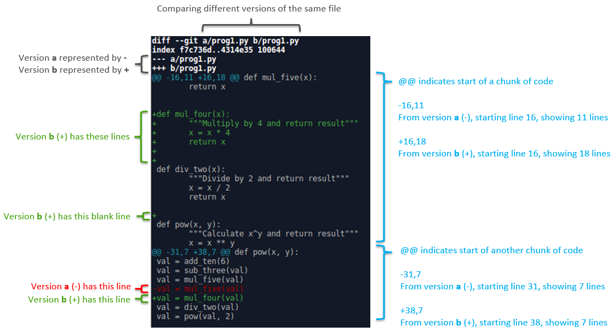
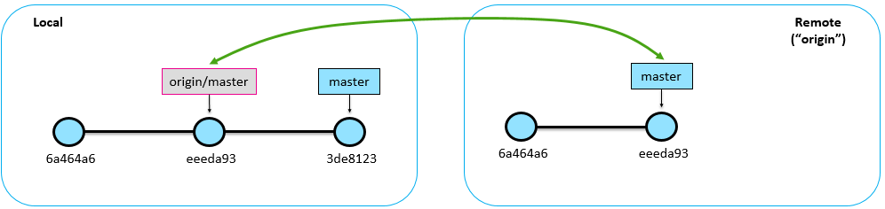
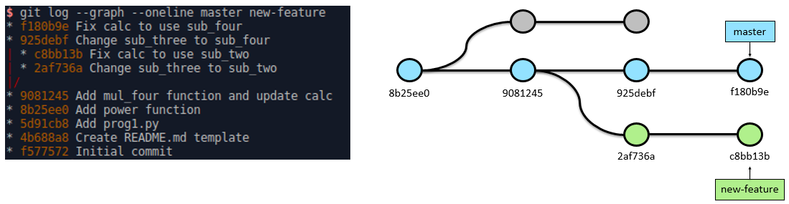
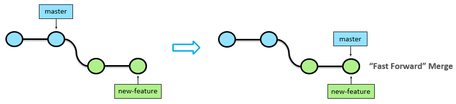
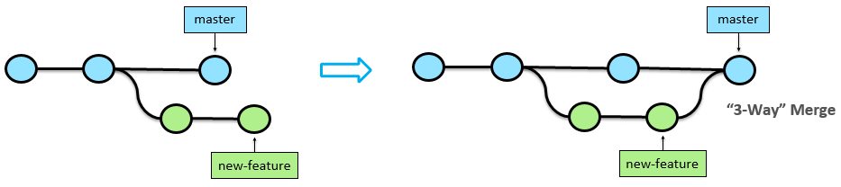
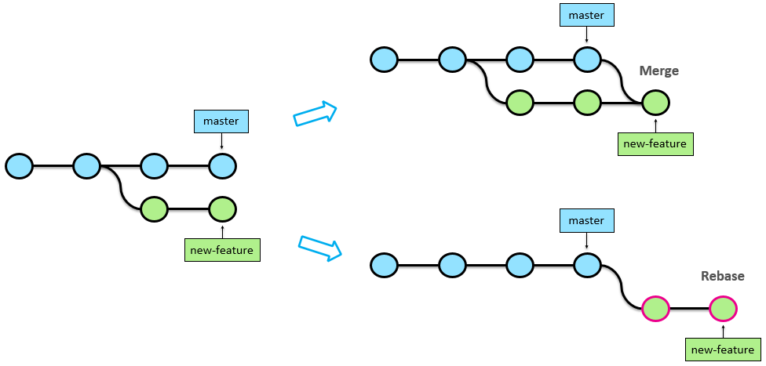

Git
Git Setup
- Install using apt-get
sudo apt-get updatesudo apt-get install git
- Verify successful installation – If successful, this will print out the git version number
git --version
- Configure username and email – These details will be used to identify who ‘committed’ the changes.
git config --global user.name "<your name>"git config --global user.email "<email address>"
- Configure default text editor – This is used to edit your commit messages
git config --global core.editor "<text editor>"
Git Areas
Working --- Staging --- Local --- Remote
- Working Directory: The files you’re editing
- Staging Area: Where you assign which files you want to commit into the repository
- Local Repo: The repository on your own machine
- Remote Repo: The repository in the cloud or network (e.g. GitHub), often named as "origin"
Creating Repositories
git init
Create a git repository in the current directory.
TIP: You can check by seeing if there’s a hidden ".git" directory created.
git clone <remove repo URL>
Create a git repository in the current directory that is a copy of the remote repo with full history of changes.
Use --depth=1 if you only want to get the latest version without all the history.
GitHub: Fork
Creates a copy of a GitHub repo and registers it under your username.
If you then clone this new repo locally, the original repo is referred to as upstream.
Local --- Remote (origin) --- Remote (upstream)
Making Changes
git add <files>
Add file(s) to staging area so they are ready to be committed.
If you want to un-stage a file, use git reset <file>.
TIP: Use a .gitignore file to ignore tracking specified files/folders.
git commit -m "<message>"
Commit staged changes into the local repo ("add a dot to the chain").
Every commit should have a properly written message, there are two options:
- Use the
-mflag to write the message on command line - If you have
core.editordefined, you can omit the-mflag and it will load up the text editor
git status
Lists files in staging area that will be committed, AND
Lists changed files in working directory have not been staged
TIP: Always use this before committing to check you are committing exactly what you intended
git diff
Compare differences between working directory and staging area:
Working <-diff-> Staging --- Local --- Remote
If file is in staging area, there will be no diff as work and staging are the same.
git diff --staged
Compare differences between staging area and repository:
Working --- Staging <-diff-> Local --- Remote
View the actual code/text changes that you are about to commit.
Reading Diff Output

HEAD
This is a reference to the last commit in the currently checked out branch (i.e. the tip).
If you checkout a specific commit instead of a branch, you will be in a ‘detached HEAD’ state. Any new commits while in this state won’t be reachable by any branch – you won’t see the commit in your git log.
TIP: If you need to make changes to old versions, create a branch: git checkout -b <branch> <commit>
TIP: If you need to find "unreachable" commits, you can use git reflog
Remote Branch
Read-only bookmarks pointing to where the branch was in the remote repo the last time Git checked.
- They take the form:
<remote>/<branch> - They are automatically updated when your local repo is in contact with the remote repo.
Use git branch -r to list out the remote branches that the local repo is currently aware of.

Inspecting Change History
git log
Show the commit history.
- Use
--statto show additional information about the committed changes - Use
--onelineto condense each commit to a single line
TIP: Good commit messages == Better looking and more useful commit history!
git log --graph --oneline <branch1> <branch2> <etc>
Show the history of commits reachable by the specified branches in a graphical format

git diff <base commit ID> <compare commit ID>
Compare differences between two commits (typically the base commit is older) - The two commits don’t have to be adjacent - You can use shortened commit IDs
git checkout <commit ID>
View files as at a particular point in history.
This moves you "back in time", so you won’t see later commits in the log.
To get back to the latest version of the branch:git checkout <branch, e.g. master>
Syncing Repositories
git remote
View remote repositories.
Use -v for verbose listing.
git remote add <name of remote, e.g. origin> <address, e.g. GitHub repo>
Create a remote connection.
git push <remote> <branch>
Push (upload) commits on the branch to the remote repository.
git pull <remote> <branch>
Pull (download) commits on the branch from the remote repository.
Equivalent to a git fetch followed by a git merge.
git fetch <remote> <branch>
Download commits from the specified branch on the remote repo to your local repo. The resulting commits will appear on a remote branch.
This allows you to see what’s been done on the remote repo without impacting your own work.
If you’re happy to integrate these changes to your local repo, you would then merge it in yourself (git pull = git fetch + git merge).
TIP: It’s generally safer to use git fetch rather than go straight to git pull, as it gives you the option to review the changes first
Branching
Think of branches as a pointer or a label to a specific commit, rather than a container of commits. As commits are created, they track along and point to the new commits.
git branch
List branches.
The * indicates which branch is currently checked out, the one that will update with changes.
git checkout <branch>
Switch to the specified branch.
git branch <new branch name>
Create a new branch.
Does not immediately checkout the new branch.
Create and checkout in one command with:git checkout -b <new branch name>
git merge <branch>
Merge specified branch into currently checked out branch.
E.g. When merging new-feature branch into master:
- Only the master branch moves because that's checked out
- The new-feature branch stays where it is


Resolving merge conflicts
Sometimes Git isn’t sure how to complete the merge, e.g. if there are changes to the same line of code.
- Use
git statusto identify which files need resolving. - The attempted merge will be in your working directory. Fix up the file manually then
git add/commitas usual.
Merging and Rebasing
While working on your branch, the master branch may move on from where you branched from. There are two options to bring your branch up to date:
-
git merge: Merge master into your branch. Non-destructive. -
git rebase: Moves entire branch to tip of master and creates new commits. Cleaner history.

Good Practices
Atomic Commits
After your initial commit of the project, you should only commit atomic changes going forward.
Atomic changes are small and only encompass one irreducible task (e.g. feature, fix, or improvement). Just large enough to be a completed block of work so the code base is never broken.
Benefits include:
- Easier code reviews, as all changes in the commit are for a single task
- Easier code merging
- Easier roll back, so if there’s a bug you can exclude one change at a time
TIP: If you make multiple changes at once on different files, you can use the staging process to divide it into multiple commits
Commit Message Format
Subject line – Required, first line of the message
- Limit to 50 characters
- Use proper capitalisation
- Do not end with a period
- Use the imperative mood, like you’re giving a command (e.g. "Fix" rather than "Fixed")
- Think of it like this: "Applying this commit will <subject line>"
Body text – Optional
- Separate from subject line with a blank line
- Wrap text at 72 characters
- Explain what and why, rather than how
TIP: Use #<number> in message to link to a GitHub Issue
Release Management
In GitHub, you should create a release on a branch (usually master) when there is a version of the code that’s ready to be distributed for use. This helps ensure people use the right versions of the project.
Use semantic versioning (http://semver.org/) for the release version numbering.
The release tag should look like: v<major>.<minor>.<patch> (e.g. v1.15.3)
- Use the 'v' prefix – Makes it clear that it’s a version number
- Increment Major for: Large rebuilds, Changes that break backwards compatibility
- Increment Minor for: New features
- Increment Patch for: Bug fixes